William Zakrajshek
California
Proven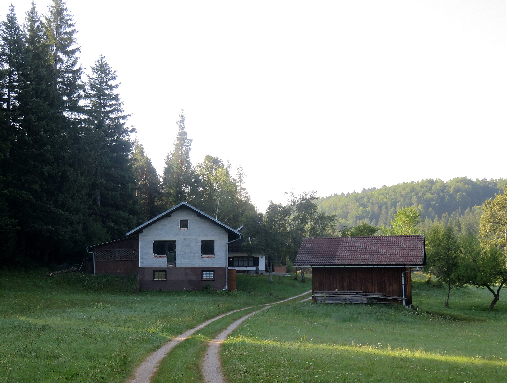
Slovenia · Minnesota · California
One uncommon name.
Nearly 370 years in the record trail.
Ograda, Bloke, Slovenia · Doremo / Wikimedia Commons · CC BY-SA 4.0
The question
I wanted to know where Zakrajshek came from. That question led to Slovenian villages, Minnesota’s Iron Range, centuries-old records, relatives we never knew existed—and one increasingly complicated family tree.
This archive separates what the records prove from what we suspect and what remains completely unresolved. The gaps aren’t hidden. They are part of the story.
01 · The name
Zakrajšek is an old Slovenian surname whose origins appear connected to place. The Dictionary of American Family Names describes it as a habitational name for someone from Zakraj in Inner Carniola, or a topographic name from zakraj, “the farthest part of a place or village.” [1]
What that does not prove: surname origin alone cannot establish that William’s documented ancestors came from a particular village named Zakraj. That connection requires records.
02 · Our documented family
California
ProvenSon of Anamae · married Carrie
Zakrajshek is her married name; her maiden name is not published.
Confirmed by WilliamJoseph’s mother
Joseph’s father
Confirmed by WilliamTheir records remain in this archive, but their precise relationship to William is being rechecked after the family correction.
Connection under reviewThe archive will not publish a connecting relationship until the records and family knowledge agree.
UnresolvedOnly proven relationships appear as solid connections. Possible people and shared surnames never become ancestors without documentary evidence.
Ograda, Municipality of Bloke · Doremo / Wikimedia Commons · CC BY-SA 4.0
03 · Slovenia
A public Slovenian genealogy index contains numerous Zakrajšek entries in the Bloke area, including a Gregor Zakrajšek at Strmca dated March 5, 1658. [4]
The honest gap
Indexed Zakrajšek entry at Strmca in the Bloke area
Multiple indexed entries in Bloke, Strmca and Zakraj
Indexed Zakrajšek households continue across the region
The connection is still being researched
Frank Zakrajshek
Family record · photographs pending
No person is pictured here until we can confirm who they are.
04 · Minnesota
A new country. The same name. The documented American story takes shape in northern Minnesota.
Frank and Matilda became part of the Minnesota Zakrajshek story. Their son Anthony “Tony” was born in Eveleth on October 10, 1919. Minnesota Historical Society research identifies Slovenes among the Iron Range’s earliest immigrant groups and documents a Slovene wedding in Eveleth in 1908. [5]
Tony worked as an electrician at the Sartell paper mill under St. Regis for 45 years, then served Sartell on its city council, as mayor from 1974–1978, and as a volunteer fire chief. Sartell’s own historical archive identifies him in surviving council photographs. [6]
Public records also preserve Frank and Matilda’s son Joseph: born March 16, 1918, a technician fifth grade in the 8th Engineer Squadron, killed in action on Luzon on March 8, 1945. [7]
A visual journey
These original, period-inspired images were created for the Zakrajshek family archive to bring atmosphere to the journey. They illustrate the story without pretending to be photographs of specific relatives or documentary evidence.
The landscape left behind and the uncertain road to America.
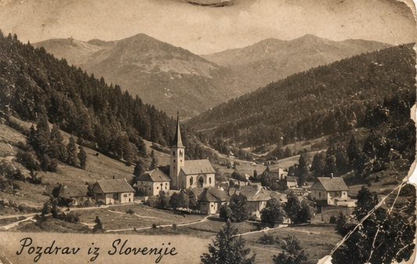
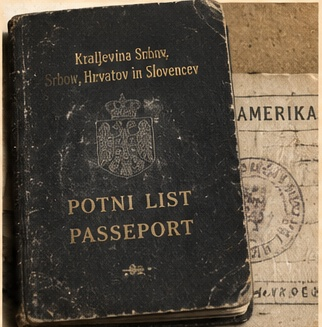
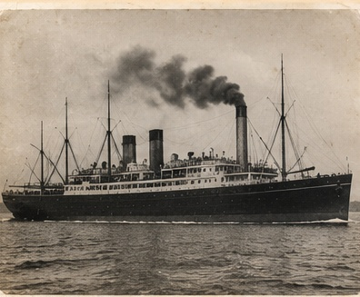
The industries and transportation landscape surrounding Minnesota immigration.
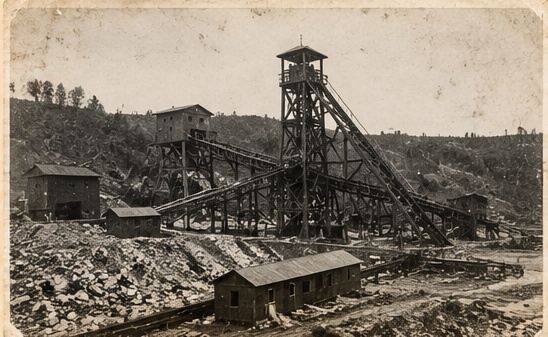
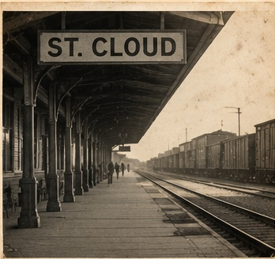
The mill town, working life and public place that frame Tony’s documented story.
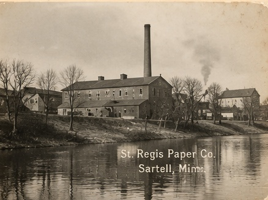
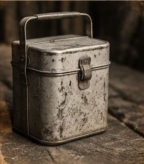
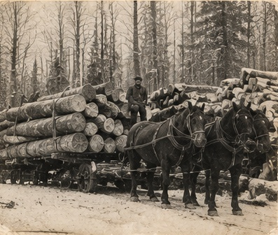
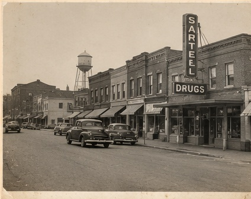
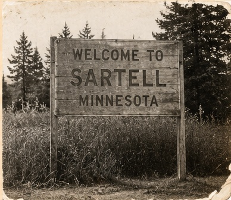
Visual storytelling, clearly labeled: these images help set the scene. Verified records, sourced archival photographs and identified family portraits remain the evidence layer.
05 · The archive
Every claim should lead back to a source. As documents are verified, this archive will hold the images, citations, transcriptions and interpretation together.
Parish registers and civil records
Households across time
Manifests and naturalization
Service files, memorials and casualty records
Obituaries and memorial records
Sacraments, parishes and burial registers
Community reporting and family notices
Family and place-based images
The geography of the search
06 · Current research
Unsolved
We know where Frank’s American story went. We’re still searching for the record that tells us exactly where his Slovenian story began.
Case file 001
The corrected family bridge
William confirms from direct family knowledge that Anamae and Ed’s son is Joseph. Joseph married Carrie; William and Aly are their children. Zakrajshek is Carrie’s married name, not her maiden name.

07 · The latest chapter
California. Family. Businesses. Books. Out at the Fair. YasReady. Daniel and Caleb. A house, a life, and yes—the ridiculous chickens.
Nothing from the original Zakrajshek.com is gone. William’s story now lives where it belongs: as the newest chapter in a much older one.
Meet William todayThe chapter still ahead
I’ve carried the name Zakrajshek my entire life. Now I’m discovering that its history reaches into a tiny part of Slovenia I’ve never seen.
Eventually, I’m going.